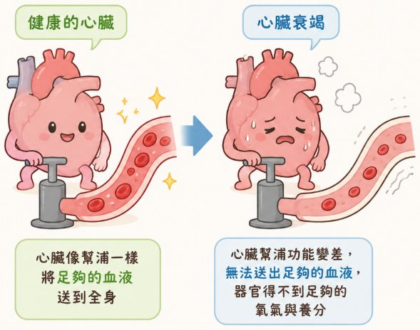
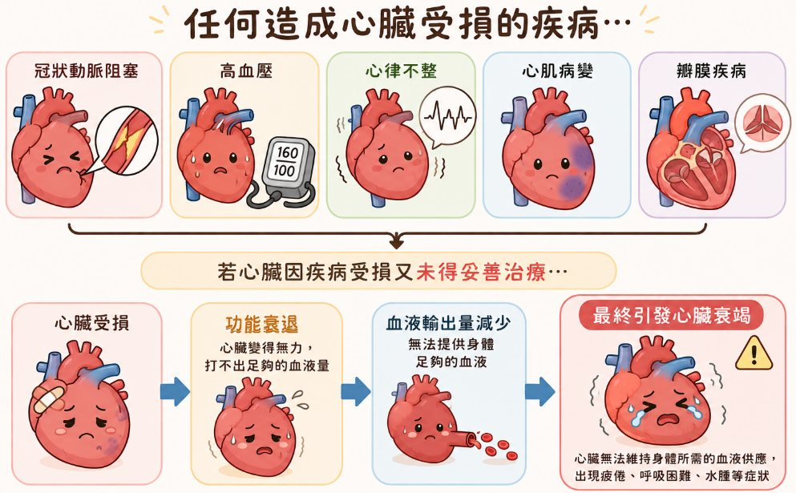
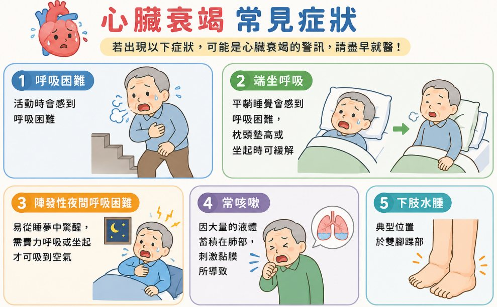
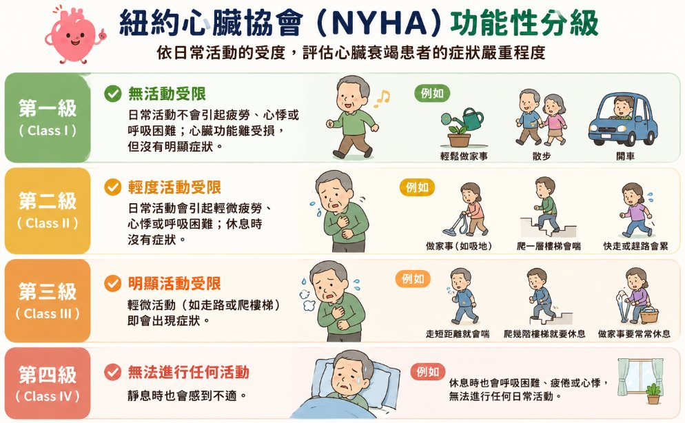
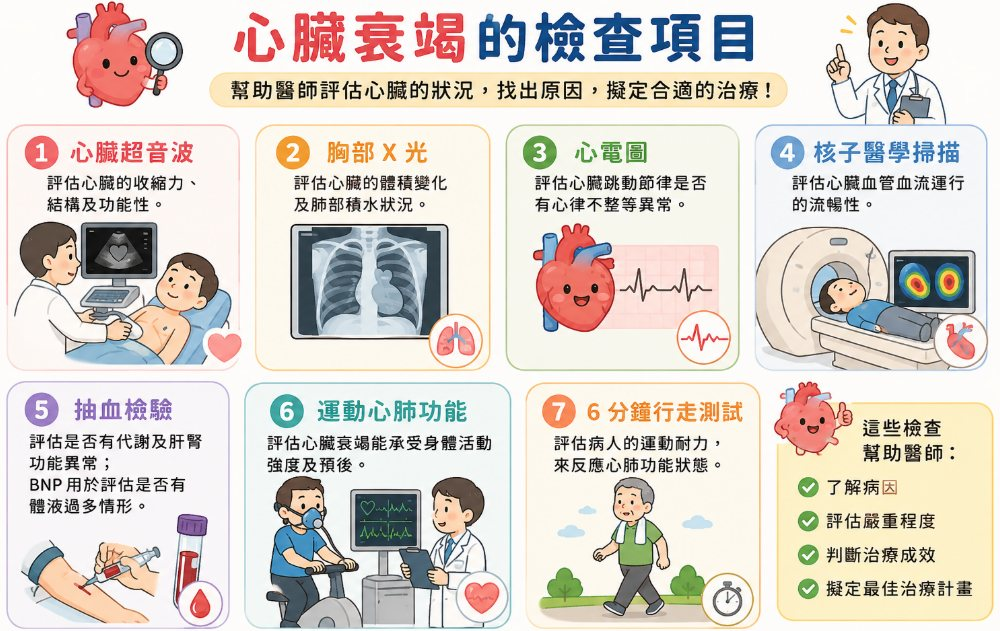
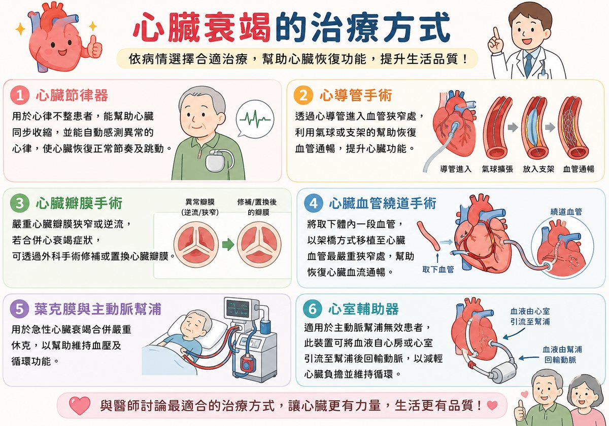
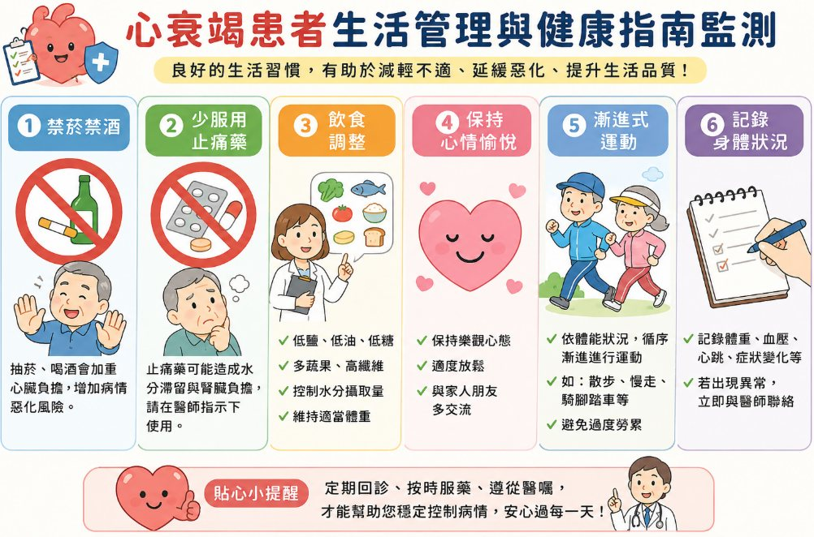
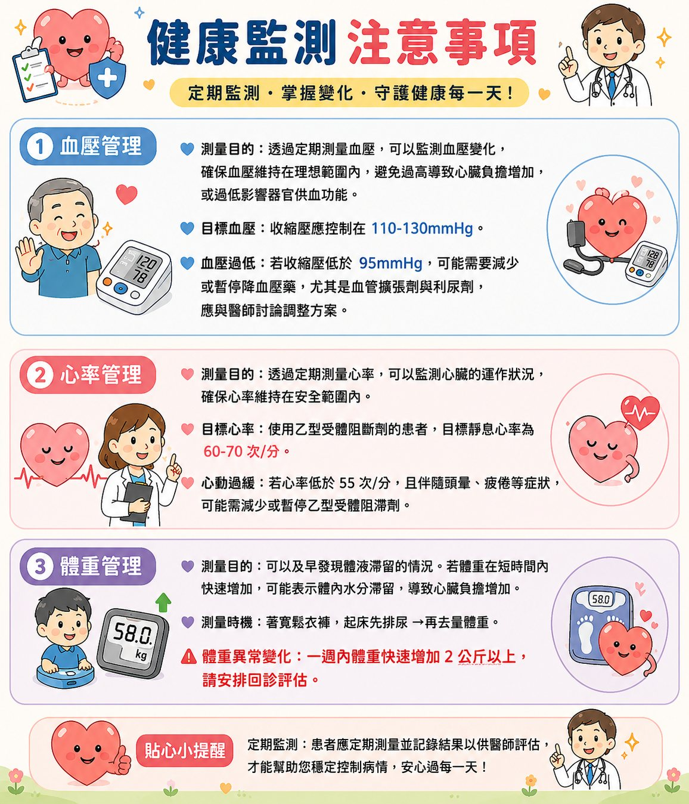
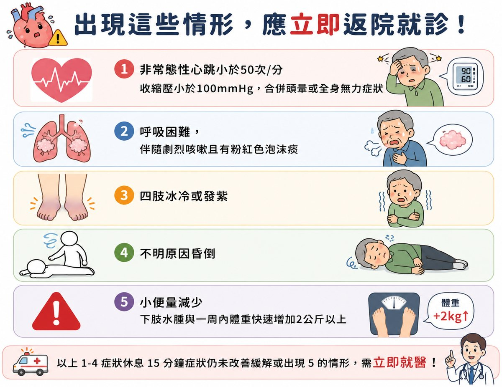

認識心衰竭
心臟就像一個幫浦，負責將充滿氧氣與養分的血液送往全身。當心臟因故「幫浦功能變差」，無法送出足夠的血液時，器官便得不到足夠的氧氣與養分，這就是心臟衰竭（Heart Failure，簡稱心衰竭）。心臟衰竭並非「心臟即將停止」，而是指心臟的「輸出功能」下降。透過適當治療，功能常可獲得改善與穩定。

心臟衰竭的成因
幾乎任何造成心臟受損的疾病都可能導致心臟衰竭，常見原因包括冠狀動脈疾病（心肌梗塞）、高血壓、心臟瓣膜疾病、心肌病變與心律不整等。多數病因可透過治療控制或減緩。

常見症狀
心臟衰竭最典型的表現與「體液滯留」及「組織灌流不足」有關，常見七大症狀如下圖。臨床小提醒若出現「喘、腫、累」三大警訊——呼吸變喘、下肢水腫、容易疲倦——請提高警覺並回診評估。

紐約心臟協會（NYHA）功能性分級
臨床上常以紐約心臟協會（NYHA）功能性分級，依「活動受限程度」評估心衰竭的嚴重度，作為治療與追蹤的依據。NYHA 分級級別 活動受限 I 無受限 II 一般活動會喘、累 III 輕微活動即有症狀 IV 休息時即有症狀

常見檢查與治療方式
醫療團隊會依病情安排心電圖、胸部 X 光、抽血檢查、心臟超音波、運動心肺功能測試與心導管等檢查，以評估心臟功能與病因。治療則涵蓋藥物治療、裝置治療（節律器）、心導管與外科手術等多元選擇。


居家生活管理與自我監測
良好的自我管理是穩定病情的關鍵。請養成定期監測血壓、心率、體重的習慣，並留意身體變化。臨床小提醒體重是心衰竭最敏感的「居家警報器」。固定時間、相同衣著量測，最能反映體液變化。


⚠ 出現這些情形，應立即返院就診！
- 非常態性心跳小於 50 次／分，收縮壓小於 100 mmHg，或合併頭暈、全身無力等症狀。
- 呼吸困難，伴隨劇烈咳嗽且有粉紅色泡沫痰。
- 四肢冰冷或發紫。
- 不明原因昏倒。
- 小便量減少；下肢水腫加重，或一週內體重快速增加 2 公斤以上。
若以上症狀休息 15 分鐘後仍未改善，或出現第 5 項情形，請立即返院就醫！
